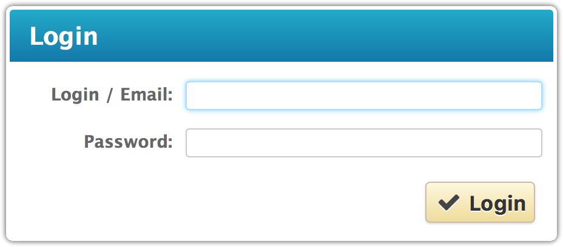
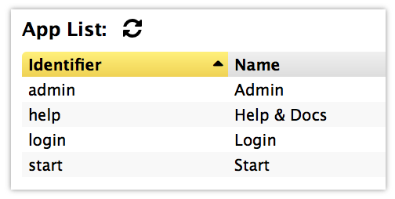

- Documentation
- Change History
8. Change History
Version 0.16 (2016-11-14)

- Anonymous Users & Login Dialogs
-
The built-in Start and Help apps can now be used by
anonymous users (non-logged-in users). Users can then login via the
top-right menu and any restricted app will automatically display the
new built-in login dialog if accessed without valid permissions.
- Refactored Access Control & Permissions
-
The role-based access controls have been refactored to support
different types of access (read, search, internal, etc) and to be
fully based on storage paths (instead of object types and names).
All hard-coded refereces to the built-in
admin role
has also been removed, as the default configuration is now sufficient.

- New Icons & Refined Widgets
-
FontAwesome icons are now available and used for many of the standard
icons. This means better rendering in all sizes and in all resolutions.
The Table, Progress and Popup widgets have also been restyled for a more
modern look.
- Improved Documentation & Help App
-
The built-in Help app has been much improved, and the on-line
documentation is now much clearer and up-to-date. The built-in
test plug-in now provides an Example app that
shows all widgets and icons available.
- Bug Fixes & API Changes
-
Lots of minor API changes have also been made and several JavaScript
functions have been moved to the built-in
legacy plug-in.
Also, a number of bugs have been fixed to improve storage handling,
session termination, connection management, etc.
Version 0.15 (2012-04-24)

- Persistent Sessions
-
User sessions are now stored to files on the server. These are kept
for up to 30 days, meaning that users do not have to login as
frequently as before (provided that their web browser cookies are
intact).
- Password Changes & Logouts
-
A new password change dialog has been added to the
User Menu at the top right corner. From there, it is
easy to either change the password or logout.
- Launching Apps in Separate Windows
-
Apps can now be launched in separate windows (or tabs) with their
own URL. This means that apps can also be bookmarked.
This proves to be very convenient for immediate access to popular apps.
Just press Ctrl or Alt when clicking
the app launcher in the Start app.
- Editing Connection Settings
-
Connections can now be created, edited and removed directly from the
Admin app (in the new "Connections" tab).
The connection details view also provides information about current
usage, pool size, timeout values, connection errors, JDBC driver
and more.
- Storage & Plug-In Information
-
The Admin app has been improved to include direct
links to the storage API for apps, connections and plug-ins. A new
field also displays the source plug-in for apps, connections and
procedures.
- Updated Graphical Style
-
The graphical style for many of the platform UI components (widgets)
has been updated. This can be seen on dialogs, tabs, buttons, text
input fields and more. The default icon set has also been extended
with many new icons to use in apps.
- Plug-ins Stored in ZIP files
-
Plug-ins are now stored unpacked on the server, i.e. the plug-in ZIP
files are used directly. Any contained JAR file is moved to a temporary
location when the plug-in is loaded and removed when it is unloaded.
- JDBC: Built-in Drivers for Drizzle, MySQL & PostgreSQL
-
JDBC drivers for Drizzle, MySQL & PostgreSQL are now bundled and
provided with the JDBC plug-in. Due to license restrictions, drivers
for other popular databases cannot at this time be included with the
default distribution.
- And Much More...
-
This release also contains several programmer-visible changes.
These include new API functions, bundled jQuery and other
libraries, changes to the storage model, etc. See the API
documentation for more details.